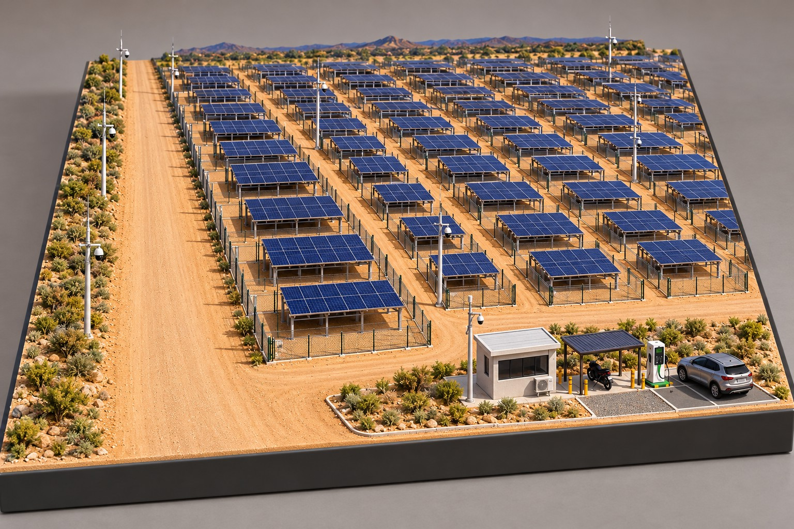
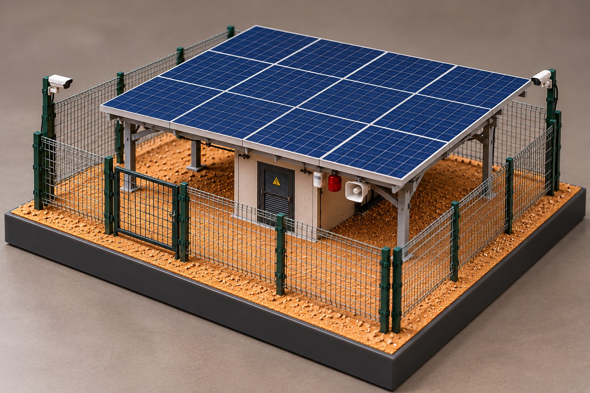

01
Mapa vivo da infraestrutura
Ativos, pontos de medição, trechos e áreas-piloto organizados no território para uma visão que combina localização e contexto.
território / ativos / camadasInteligência energética territorial
Transformamos dados da infraestrutura energética em visão geográfica, contexto operacional e decisões melhores para cidades e operações críticas.

Uma camada digital para enxergar o que está distribuído no território.
A GeoEnergiza integra dados autorizados, medição distribuída e localização dos ativos em uma mesma leitura operacional — para que equipes técnicas encontrem padrões, priorizem ações e planejem os próximos passos com mais segurança.
Ativos, pontos de medição, trechos e áreas-piloto organizados no território para uma visão que combina localização e contexto.
território / ativos / camadasGrandezas elétricas, qualidade de energia e condições operacionais reunidas em séries históricas prontas para análise.
tensão / corrente / potênciaAlarmes, anomalias e mudanças de comportamento destacados para apoiar manutenção, fiscalização e priorização.
histórico / recorrência / resposta
MEDIÇÃO + INFRAESTRUTURAO piloto parte de uma seleção técnica de pontos, instala e acompanha os dispositivos necessários e conecta os dados a uma plataforma com visão geográfica, histórica e analítica.
A plataforma organiza o histórico para que uma ocorrência não seja apenas um ponto isolado, mas parte de uma leitura maior sobre a rede, seus ativos e sua evolução.
Falar sobre um piloto ↗O piloto municipal valida a metodologia em uma área tecnicamente selecionada e cria os parâmetros para uma futura expansão — sem exigir a cobertura integral da cidade para começar.
Conversar sobre um piloto ↗Conte-nos onde a gestão precisa enxergar melhor. A primeira conversa é para entender o contexto, os dados disponíveis e o caminho possível para um piloto.
Falar com a GeoEnergiza ↗